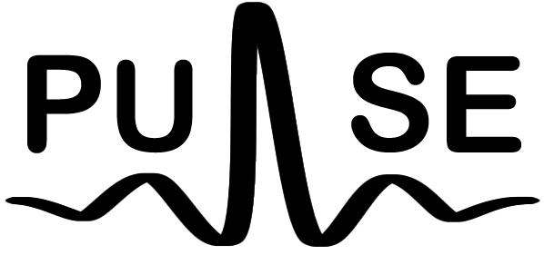

What is Pulse!?
Pulse is an interactive light and sound installation at Electromagnetic Field 2016. In a Guitar Hero style, look stupid as you jump around hitting buttons to music as pretty lights stream down the 8-metre poles in front of you.
Follow us on Twitter!
Created by Daniel Saul, Andrew Cowan & John Alton
Available on GitHub
Pulse Hardware & Software
Pulse Web & Server